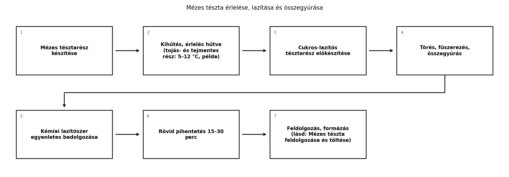

A mézeskalácsos műhelyben gyakori jelenet: a frissen összeállított mézes tészta kemény, a fűszer még különálló, a liszt nyers, „lisztízű”. Ha a pék azonnal formázná, a vékonyra nyújtott lap megrepedne, a sütés után egyenetlenül barnulna, és a lazítószer sem dolgozna elég egyenletesen. Az érlelés, a puhítás, a törés, a lazítás és a fűszerezés az a szakasz, amelyből a nyers anyagokból jól megmunkálható, kiegyensúlyozott ízű mézes tésztát készít. Ez a fejezet ezt a műveletsort tanítja meg, a hibákkal együtt.

A lépéssor nem szigorú, mert van olyan mézes tészta, amelyben a mézes és a cukros részt külön érlelik, és csak közvetlenül a feldolgozás előtt gyúrják össze. A folyamatábra a tipikus, hosszan, hűtve érlelt mézeskalácstészta útját mutatja. Ez a Mézes tészták készítése alfejezetben leírt (b) változat: a mézes tésztarész lazítószer nélkül érik, a lazítószert az érlelés utáni összegyúrásnál dolgozzuk be; a rövid érlelésű, egyfázisú (a) változatnál a lazítószer már a tésztaképzés végén a tésztába kerül.
Definíció. Az érlelés a nyers mézes tészta szándékos, hűtött vagy hűvös pihentetése, amely alatt a liszt és a folyadékok, a méz, a cukor, a fűszerek és a zsiradék egyensúlyba kerülnek; a tészta puhul, formázhatóbbá válik, íze pedig összeér.
A kenyértésztához képest a mézes tészta érlelése nem elsősorban a gázképződésről szól: sokkal inkább a nyersanyagok átnedvesedéséről, a sikérváz fellazulásáról és az aromaanyagok beéréséről. A hűtőben pihenő tojás- és tejmentes mézes tésztarész ezért akár napokig, egyes hagyományos mézeskalács-tésztáknál a technológiai lapon rögzített hosszabb ideig is eltartható; a nyers tojást vagy tejet tartalmazó rész nem ilyen (ellenőrizendő: üzemi technológiai lap, termékcsalád, HACCP-terv).
Az érlelés alatt lejátszódó változások:
Tárolási szabály. A tojás és tej nélküli mézes tésztarész hűvös helyen vagy hűtve érlelhető (tanulási példa: 5–12 °C); a nyers tojást vagy tejet tartalmazó tésztarészt legfeljebb 5 °C-on, a HACCP-tervben rögzített ideig kell tartani (tanulási példa: legfeljebb 24–48 óra; ellenőrizendő: HACCP-terv). A hosszú, többhetes érlelés csak a tojás- és tejmentes mézes tésztarészre vonatkozik; a tojásos-cukros rész frissen, az összegyúrás előtt készül. Az érlelés lefedve, fóliával vagy élelmiszeripari fedővel, hogy a felület ne száradjon ki és ne vegyen át idegen szagot. A tésztát címkézni kell: terméknév, gyártási dátum, az érlelés kezdete, a felhasználhatóság időpontja, allergének. A hűtőben a mézes tészta az ételmaradékoktól, tojástól, töltelékektől elkülönítve helyezendő el.
HACCP. A hűtött érlelés kritikus pont lehet, ha a tésztában nyers tojás, tej vagy hosszú ideig tárolt hidratált liszt van. A veszély a mikrobaszaporodás; a megelőzés a gyors lehűtés, a tésztarész típusához tartozó hőmérséklet (nyers tojásos vagy tejes résznél legfeljebb 5 °C) és az érlelési idő betartása. A határértékeket a pékség HACCP-terve szerint kell ellenőrizni: hűtőhőmérséklet, a tészta hőmérséklete a kivételkor, az érlelés napjainak száma, különösen nyers tojásos vagy tejes részeknél (ellenőrizendő: üzemi HACCP-terv, hatósági útmutató).
Higiénia. Az érlelőedényt, fóliát és a hűtőteret tisztán kell tartani. A tésztába kerülő nyersanyagokból a hűtőben csepegés, keresztszennyeződés nem érheti. A romlott, savanyú vagy penészes foltú tésztát ki kell selejtezni, nem szabad beledolgozni a friss tésztába.
A hűtőből kivett, érlelt tészta hideg, tömör, és nehezen gyúrható. A puhítás az a művelet, amellyel a tésztát rövid, gyenge mechanikai igénybevétellel megformázhatóvá tesszük, anélkül, hogy a sikérvázat erősen kifejlesztenénk. A törés ennek kézi formája:
Gyakorlat. A nagy tömegű, hideg tésztát kisebb darabokra szakítjuk vagy vágjuk, majd a darabokat egymásra hajtogatva, tenyerünkkel óvatosan lenyomkodva lazítjuk. Nem dagasztjuk, nem gyúrjuk erőteljesen, mert a mézeskalácstésztában a túl sok sikérfejlesztés rágós, sütés közben zsugorodó, repedező terméket ad.
A törés célja:
A törést a feldolgozás előtt közvetlenül végezzük, mert a túl sok előkészített és felmelegedett tészta felülete kiszárad, és a lazítószer is idő előtt megkezdheti a reakciót.
Definíció. A lazítás a sütőipari tésztában gázbuborékok létrehozása, amelyek a sütés során pórusos szerkezetet, könnyebb bélszerkezetet és finomabb étkezési minőséget adnak.
A mézes tésztáknál a három lazítási mód közül elsősorban a kémiai és a fizikai lazítás jellemző; a biológiai lazítás csak kivételes, puha mézes kenyérféléknél vagy egyes mézes kalácsoknál fordul elő.
A biológiai lazítást élő mikroorganizmus, elsősorban a sütőélesztő (Saccharomyces cerevisiae) végzi. A tészta cukrából szén-dioxidot és etanolt termel:
A nagy cukor- és méztartalmú mézes tésztákban az élesztő élettevékenysége gátolt: a sok oldott cukor ozmotikus stresszt okoz, a méz savassága pedig csökkenti a pH-t. Az élesztő továbbá lassan dolgozik a hideg érlelés alatt. Ha mégis biológiai lazítást alkalmaznak, akkor az élesztő mennyiségét a gyártmánylap pontosan szabja meg, és a kelesztést hűvös, hosszú idővel vezetik (ellenőrizendő: üzemi technológiai lap, élesztő gyártói adatlapja). A mézes tészták többségénél az élesztőgáz nem lenne elegendő, mert a tésztalap vékony, és a termék a tömör, omlós jelleg helyett kenyérszerűvé válna.
A kémiai lazítás kémiai anyagok hő hatására bekövetkező gázfejlődését használja. A mézeskalács-készítésben leggyakoribb:
Szabály. A kémiai lazítószert mindig kimérve, gyártmánylap vagy technológiai lap szerint szabad adagolni. A lazítószert szitálva, folyamatos mozgatás közben kell a tésztába dolgozni, hogy ne maradjanak csomók. A túladagolás sütési hibát, felpúposodást, kellemetlen ammóniaízű vagy lúgos ízű terméket okoz. A kémiai lazítószer feleslegben való használata élelmiszer-biztonsági hiba is lehet, mert a bomlástermékek nem minden esetben megengedettek korlátlanul (ellenőrizendő: hatályos adalékanyag-rendelet, 1333/2008/EK, és a gyártói adatlap).
A kémiai lazítószert hűvös, száraz helyen, élelmiszerektől elkülönítve, bontatlan vagy jól zárt csomagolásban tároljuk. Közvetlenül a tésztába adagolás előtt mérjük ki, mert nedvességgel érintkezve idő előtt reakcióba léphet.
A fizikai lazítás nem kémiai anyagból fejleszt gázt, hanem mechanikai úton visz be levegőt vagy rétegzi a tésztát:
A mézes tésztákra jellemző, hogy a lazítószer gázfejlődése mellett a tészta vékonyra nyújtása és a sütőtér hője együttesen adja a pórusos, mégis tömör mézeskalács-szerkezetet.
Sok hagyományos mézeskalács-tésztánál külön készül a mézes tésztarész és külön a cukros, tojásos, lazítós tésztarész, majd a kettőt a feldolgozás előtt gyúrják össze. Ennek oka:
Lépések (hidegen készült mézes tészta):
Fűszerezés. A mézeskalácsfűszer-keverék a termék lelke. Jellemző összetevők: fahéj, szegfűszeg, gyömbér, szerecsendió, szegfűbors, kardamom, ánizs, édeskömény, koriander, esetenként borókabogyó. A fűszerek aránya a termék karakterétől függ; a gyakorlatban a fahéj és a szegfűszeg dominál, a többi a háttéraromát adja.
Példa. 100 g mézeskalácsfűszer-keverék lehetséges összetétele (tanulási, szemléltető recept, nem szabványos):
| Fűszer | Mennyiség (g) |
|---|---|
| Fahéj (őrölt) | 40 |
| Szegfűszeg (őrölt) | 20 |
| Gyömbér (őrölt) | 20 |
| Szerecsendió (őrölt) | 10 |
| Szegfűbors (őrölt) | 5 |
| Kardamom (őrölt) | 5 |
Az adagolást gyártmánylap szerint kell átméretezni. A fűszert mindig a tésztához kell szitálni, mert az őrölt fűszer hajlamos csomósodni, és így sötét foltokat ad a tésztában.
Allergén. A mézes tészták jellemző allergénjei: búzaliszt (glutén), tojás, tej vagy tejpor, valamint a recepttől függően diófélék, mandula, mogyoró, szezám. A fűszerkeverékek keresztszennyeződhetnek zellerrel, mustárral, szezámmal; ezt a beszállítói nyilatkozatból és a gyártmánylapból ellenőrizni kell. A munkaterületen a fűszerek és a lazítószerek kimérésekor lisztpor és idegen anyag a tésztába nem kerülhet; az allergénmentes termékeket külön vonalon kell kezelni.
Gépbiztonság. Ha a mézes tésztát dagasztógéppel gyúrjuk, a betanítás után, felügyelettel dolgozzon a tanuló. A gépet csak leállított, áramtalanított, újraindítás ellen biztosított állapotban szabad tisztítani, belenyúlni vagy a tésztát kézzel igazítani. A dagasztókar forgása alatt a tésztába nyúlni tilos. Kémiai lazítószer szitálásakor kerülni kell a porfelhőt; a védőkesztyű, a védőszemüveg és a jó szellőzés ajánlott, különösen szalalkáli adagolásánál.
A mézes tészta nyers állapotban is mutathat hibákat; ezek egy része sütés után még jobban látszik. A hibákat a tünet, az ok és a megelőzés hármasában érdemes gondolkodni.
1. Kemény, nehezen nyújtható tészta
2. Ragadós, kenődő tészta
3. Egyenetlen lazulás, foltos bélzet
4. Ammónia- vagy lúg ízű, szagos termék
5. Fűszercsomós, foltos tészta
6. Savanyú, idegen szagú nyers tészta
Cél. A tanuló önállóan előkészít egy hűtött mézes tésztát: kiveszi, ellenőrzi az érleltséget, megtöri, fűszerezi, kimért lazítószert dolgoz bele, és feldolgozásra kész állapotúra gyúrja.
Eszközök és anyagok. Hűtőben érlelt mézes tésztarész, a gyártmánylap szerinti cukros–tojásos–lazítós tésztarész vagy külön alapanyagok, mézeskalácsfűszer-keverék, kémiai lazítószer (pl. szalalkáli vagy szódabikarbóna), mérleg, szita, fólia, gyúródeszka, kaparó, dagasztógép (opcionális), hőmérő.
Higiénia. A tanuló tiszta munkaruhát, hajhálót visel, ékszert nem; a kezét a munka megkezdése előtt meleg folyóvízzel, szappannal alaposan mos; sebet vízhatlan kötszerrel lát el. A gyúródeszkát, a kaparót, a mérleget és a szitát tiszta, fertőtlenített állapotban használja. A munkaterületet ellenőrzi, hogy lisztpor, idegen anyag, ételmaradék ne kerüljön a tésztába. A tésztához használt hűtőtér polcát előzetesen ellenőrzi, hogy nincs-e csepegés.
Gépbiztonság. A dagasztógép használata előtt a tanuló elvégzi az üzem előtti szemlét: védőburkolat, vészleállító, reteszelés, a gép aljzatának és kapcsolójának állapota. A gépet csak betanítás után, felügyelettel kezeli. Tisztítás vagy a tészta kézzel való igazítása csak leállított, áramtalanított gépen történhet; a dagasztókar forgása közben a tésztába nyúlni tilos.
Lépések:
Ellenőrzési pontok. A tészta hőmérséklete 16–20 °C; az állománya enyhén tapadós, de nem kenődik; a vágásfelületen apró pórusok láthatók; a fűszer egyenletesen oszlik el; a lazítószer nem csomós; a tészta kellemes, fűszeres, mézes illatú; ammónia- vagy savanyú szag nem érezhető.
Tipikus hibák a gyakorlatban. Túl erős dagasztás; a hideg tészta azonnali teljes kidolgozása; lazítószer csomósan való belekeverése; a tészta gyúrás közbeni felmelegedése; a mézes rész és a cukros rész nem egyenletes aránya.
Dokumentálás. A tanuló a gyártmánylaphoz tartozó műveleti naplóban rögzíti: a tételszámot, az érlelési napok számát, a tészta hőmérsékletét, a kimért fűszer- és lazítószer-mennyiséget, a gyúrási időt, a pihentetési időt, és az érzékszervi ellenőrzés eredményét. Ha kritikus határérték átlépése történik, azt jelenti a műszakvezetőnek, és a HACCP-terv szerint jár el.
Esemény. Egy mézeskalácsos műhelyben hétfőn a pékségvezető kiveszi a pénteken készített, hűtőben érlelt mézes tésztát. A tésztából egy szakasz kemény, repedezett, a másik szakasz rendben van. A fűszer illata egyenetlen. Az aznapi formázás során a tésztalapok vékonyra nyújtva hajszálrepedéseket mutatnak, a sütés után pedig a termékek egy része felhólyagosodik.
Hibaelemzés. A kép alapján több hiba egyszerre jelentkezik:
Helyesbítés és megelőzés. A kemény, repedező tésztarészt külön, rövid hűvös pihentetés és óvatos törés után próbasütéssel ellenőrzik; ha a próbatermék megfelel, feldolgozható, ha nem, selejt. Ha a tészta erős, szúrós ammóniaszagú, a szalalkáli adagja hibás: a tételt a gyártmánylap szerint selejtezni kell, és a kimérést ellenőrizni. A megelőzéshez a műszakok munkalapját kiegészítik: a hűtőbe helyezés előtti tészta hőmérsékletét, a lazítószer szitálását és a kivétel utáni feldolgozási időt rögzítik.
Tanulság. A mézes tészta minősége nemcsak a recepten, hanem az érlelés és az összegyúrás fegyelmén múlik. A hibák akkor kerülhetők el, ha a tészta hőmérsékletét, az állásidőt és a lazítószer-eloszlást minden tételnél ellenőrzik.
A nyers, érlelt, törésen és összegyúráson átesett mézes tésztánál a jó minőség jellemzői:
A tészta túl erős dagasztása. A sikérváz kifejlődik, a termék rágós, sütés közben zsugorodik. Helyes megoldás: a mézes tésztát csak hajtogatva, nyomkodva, rövid ideig dolgozni.
A kémiai lazítószer nem pontos kimérése. A tésztába csomósan bekerülő lazítószer, vagy a túladagolás sütési hibákat, sőt kellemetlen ízt okoz. Helyes megoldás: szitálva, mérleg szerint, a száraz anyagokkal (fűszer, porcukor) előkeverve, egyenletesen hajtogatva dolgozni be.
A tészta nem megfelelő hűtése. A túl meleg tészta ragad, a zsiradék olvad, a termék elterül. Helyes megoldás: a tésztát 16–20 °C-ra visszahűteni, a feldolgozást szakaszolni, a pihentetést hűvös helyen végezni.
A fűszerkeverék hosszú, meleg, párás tárolása. A fűszer illóolajai elillannak, a keverék összeáll, csomós lesz; a termék íze gyenge, foltos. Helyes megoldás: száraz, hűvös, zárt, fénytől védett tárolás; a fűszerkeveréket kis adagokban, frissen őrölve vagy jó minőségű őrleményből készíteni.
Önellenőrzés – válaszok
1. feladat (A). Határozza meg saját szavaival a mézes tészta érlelését és a törés műveletét! Mondjon két változást, amelyek az érlelés során a tésztában végbemennek.
2. feladat (A). Milyen kritikus pontokat ellenőriz a mézes tészta hűtött érlelésekor, ha a tésztába nyers tojás is került? Nevezzen meg legalább két tényezőt!
3. feladat (B). Egy üzemi technológiai lap szerint 10 kg mézes tésztához 40 g szódabikarbóna szükséges. Mennyit kell kimérni 6,5 kg, illetve 15,0 kg tésztához? A számításhoz az egyenes arányosságot használja! Az eredményt g-ban, tizedesjegyre ellenőrizze.
4. feladat (B). A fűszerkeverék aránya: 100 g keverékben 40 g fahéj, 20 g szegfűszeg, 20 g gyömbér, 10 g szerecsendió, 5 g szegfűbors és 5 g kardamom. Mennyi fűszert kell kimérni, ha 3,2 kg mézes tésztához a tészta 0,8%-át kitevő fűszerkeverékre van szükség? Mennyi lesz ebből a szerecsendió mennyisége? (A százalék a nyers tészta tömegére vonatkozik; ellenőrizze a mértékegységeket.)
5. feladat (C). Egy mézeskalács-tételnél a tészta a gyúródeszkán ragad, a formázás során elkenődik. A tészta hőmérséklete 26 °C, a zsiradék olvadni kezd. Elemezze a hibát: mi a legvalószínűbb ok, hogyan ellenőrizné, és mi lenne a helyes beavatkozás? Írja le a megelőzést is!
6. feladat (D). Gyakorlófeladat: a hűtőből kivett, érlelt mézes tésztát meg kell törni, fűszerezni, kimért szódabikarbónát beledolgozni, és rövid pihentetésre előkészíteni. Írja le a lépéseket a higiéniai és gépbiztonsági ellenőrzésekkel együtt, és adja meg, milyen jellemzők alapján dönti el, hogy a tészta feldolgozásra kész!
1. feladat. Az érlelés a mézes tészta szándékos, hűtött pihentetése; a liszt hidratálódik, a sikér fellazul, a tészta képlékenyebbé válik, a fűszerek beérnek. A törés a nagy tömegű, hideg tésztát kisebb darabokra szakítja és óvatosan hajtogatja; cél az egyenletes hőmérséklet, a tésztarétegek fellazítása és a későbbi adalékok befogadása. Példák a változásra: a keményítő duzzadása, a tészta nyers ízének eltűnése, a méz savassága miatti puhulás.
2. feladat. A hűtési hőmérsékletet (nyers tojásos vagy tejes résznél legfeljebb 5 °C, a tojás- és tejmentes résznél tanulási példaként 5–12 °C; ellenőrizendő), az érlelési időt, a tészta kivételkor mért hőmérsékletét, és azt, hogy a nyers tojásos tészta gyorsan lehűlt-e. Ha a hőmérséklet a megengedettnél magasabb, a tételt nem szabad felhasználni.
3. feladat. Az arány: .
-hoz: -hoz: Ellenőrzés: az adagolás a tésztatömeggel egyenesen arányos, és a kapott értékek a tésztatömeg növekedésével arányosan nőnek.
4. feladat. Először a fűszerkeverék tömege: a tészta 0,8%-a: Ebből a szerecsendió aránya: , tehát: A kimérésnél 25,6 g fűszerkeverékből 2,6 g szerecsendió. Ellenőrzés: a fűszerkeverék a tésztatömeg 0,8%-a, a szerecsendió a keverék 10%-a, tehát a tésztatömeghez képest 0,08%; ez nagyságrendileg reális.
5. feladat. A tünet: ragadó, kenődő tészta. Az ok leggyakrabban a túlmelegedés; a hőmérséklet 26 °C, ami meghaladja a 16–20 °C-ot, a zsiradék olvad, a tészta váz összeesik. Ellenőrzés: hőmérővel a tésztamag mérése; a zsiradék érzékszervi jele. Beavatkozás: a tésztát vékony lapokban hűvös helyre, lehetőleg hűtőbe tesszük, hogy 16–20 °C-ra hűljön, majd újra törjük, és a formázást szakaszolva végezzük. Megelőzés: a tésztát kivétel után azonnal, kis adagokban feldolgozni, a helyiség hőmérsékletét ellenőrizni, a gyúrási időt betartani, a tésztát lefedve tárolni.
6. feladat. A gyakorlati útmutató szerint: higiéniai ellenőrzés (kézmosás, tiszta eszközök, hűtőtér ellenőrzés); gépbiztonsági szemle (ha gépet használ; leállítva, áramtalanítva); a tészta kivétele, hőmérséklet (16–20 °C), törés, fűszer és lazítószer kimérése, szitálása, óvatos, hajtogatva gyúrás, majd 15–30 perc pihentetés lefedve. A tészta feldolgozásra kész, ha 16–20 °C, enyhén tapadós, de nem ragad; a színe egyenletes, a fűszer eloszlott, a lazítószer nem csomós, nincs ammónia- vagy savanyú szag. A műveleti naplóba a tételt, hőmérsékletet, mérleget, időket be kell jegyezni.
A mézes tészta érlelése hűvös, hosszabb pihentetés, amelyben a liszt hidratálódik, a sikér fellazul, a zsiradék eloszlik, és a fűszerek beérnek. A törés a hideg tészta rövid, gyenge megmunkálása; a tésztát darabokra szakítjuk, hajtogatjuk, de nem dagasztjuk erősen. A lazítás lehet biológiai (élesztő), kémiai (szódabikarbóna, szalalkáli, sütőpor) és fizikai (tojáshab, zsiradékrétegezés, gőz); a mézes tésztákra a kémiai és fizikai lazítás a jellemző. A kémiai lazítószert pontosan, szitálva kell a tésztába dolgozni; a szalalkáli csak vékony, jól átsülő termékhez való. A mézes és a cukros tésztarészt feldolgozás előtt gyúrjuk össze, ügyelve a 16–20 °C hőmérsékletre. A fűszerkeveréket szitálva, egyenletesen adagoljuk, mert csomósan sötét foltokat okoz. A fő hibák a hibás érlelés, a túlgyúrás, a lazítószer egyenetlensége és a melegedés miatti ragadás. A jól előkészített, hűtött, fűszerezett, lazított tészta viszi tovább a formázást a mézes tészta feldolgozása és töltése alfejezetbe.